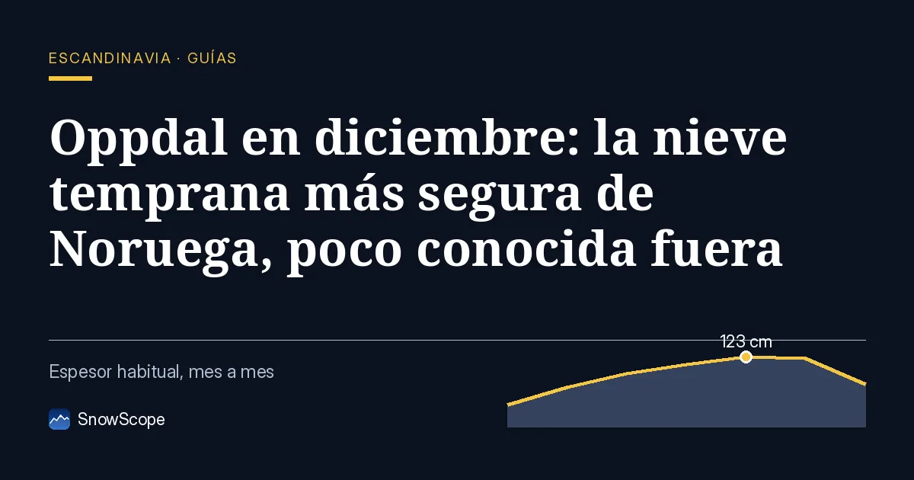

Oppdal en diciembre: la nieve temprana más segura de Noruega, poco conocida fuera
¿Hay suficiente nieve en Oppdal en diciembre? En nuestros 46 inviernos de histórico, casi siempre. Un 15 de diciembre típico, la base (585 m) tiene 60 cm, y el 93 % de los inviernos tenía allí 30 cm o más la semana del 15 al 21 de diciembre. Es el mejor registro de base de todas las estaciones noruegas que comparamos.
Consulta la previsión de nieve en tiempo real de Oppdal en la app SnowScopeEspesor de nieve, alertas de nieve polvo y mapa 3D, gratis.
¿Nieve en diciembre? Sí, y desde abajo
Oppdal está en el interior, entre Dovrefjell y Trondheim, en un valle seco y frío que conserva la nieve. La estación tiene 41 km de pistas cartografiadas y 15 remontes entre 585 m y 1327 m. Lo especial en diciembre es que la nieve está casi igual de bien abajo que arriba: 60 cm, 64 cm y 72 cm en base, media montaña y cima un 15 de diciembre típico.


Tres alturas, casi una respuesta
La parte de inviernos con 30 cm o más la semana del 15 al 21 de diciembre es del 93 % en la base, 96 % a media montaña y 98 % en la cima. En Navidad: 96 %, 98 % y 98 %. Incluso un año flojo (1 de cada 10) mantiene 30 cm en la base y 40 cm a media montaña el 15 de diciembre.
La advertencia sincera es la tendencia. La media de diciembre en la base bajó de 71 cm en los primeros 15 inviernos a 46 cm en los últimos 15. El invierno pasado había 38 cm en las tres alturas el 15 de diciembre: esquiable, pero muy por debajo de la normal de antes.
El precio
Los forfaits de Oppdal se venden a precio dinámico en la tienda oficial en línea del operador. El 13 de noviembre de 2026 no pudimos leer un importe fijo en la página oficial, así que no damos ninguno. Reserva pronto en línea y piensa en fechas anteriores a las vacaciones de Navidad.
Frente a Trysil
Trysil es más grande (101 km de pistas cartografiadas) y más conocida, pero en diciembre su base (407 m) es mucho más floja: 26 cm un 15 de diciembre típico y el 52 % de inviernos con 30 cm la semana del 15 al 21 de diciembre. Su media montaña (44 cm, 83 %) y su cima (60 cm, 89 %) están bien, pero siguen por debajo de Oppdal.
Si quieres nieve en todas partes en diciembre, también en las pistas de principiantes de abajo, Oppdal es la opción más segura.
Cómo organizar el viaje
Oppdal está en el eje de tren y carretera Oslo-Trondheim, así que se llega sin un largo trayecto de montaña. Tan al norte, los días de diciembre son cortos: cuenta con menos horas en pista, empieza pronto y piensa en el frío, porque los valles secos suelen ser los más fríos.
Consejos para esquiadores
- Familias con principiantes: la base de Oppdal tenía 30 cm a mediados de diciembre en el 93 % de nuestros inviernos, así que las pistas fáciles suelen estar cubiertas.
- Compra el forfait en línea y pronto; los precios cambian con la fecha.
- Prepárate para frío intenso y días cortos, y sube en el primer remonte.
- Fuera de pista en Dovrefjell: lee antes el aviso de aludes noruego (varsom.no).
Más mapas (sitios externos)
Referencias y créditos
- Oppdal: official lift-pass page of the operator (prices by date; no fixed price quoted), checked 13 November 2026 www.alpinco.com/en/oppdal/buy-day-pass-1-8-days
- Trysil: official lift-pass page of the operator (prices by date; no fixed price quoted), checked 13 November 2026 www.skistar.com/en/winter/skipass/buy-skipass/lift-pass-trysil/
Sobre estas cifras
Cifras de nieve: histórico de nieve de SnowScope, 46 inviernos pasados (1980-81 a 2025-26) a las alturas de la estación, corregido por altitud (una estimación para una zona, no partes de la estación); «buena nieve» = 30 cm o más en el suelo de media en la semana. Mapa: nuestro espesor habitual el 15 de diciembre repartido sobre el relieve según la altura. Pistas y remontes: cartografía OpenSkiMap. Forfaits: tarifas oficiales de las estaciones, comprobadas el 13 de noviembre de 2026; los precios pueden cambiar.
Boletines oficiales de aludes: Varsom (NVE)
Citar este informe
Para investigación, docencia o prensa: cifras y gráficos reutilizables libremente bajo CC BY 4.0 con esta cita.
SnowScope (2026), Oppdal en diciembre: la nieve temprana más segura de Noruega, poco conocida fuera, https://snowscope.app/blog/es/2026/11/oppdal-december-skiing-snow-reliable-norway.html, consultado el 2026-11-14
SnowScope (Atlas Labs). (2026, November 14). Oppdal en diciembre: la nieve temprana más segura de Noruega, poco conocida fuera. SnowScope snow reports. https://snowscope.app/blog/es/2026/11/oppdal-december-skiing-snow-reliable-norway.html
BibTeX
@misc{snowscope2026oppdaldecemberskiingsnow,
author = {{SnowScope (Atlas Labs)}},
title = {Oppdal en diciembre: la nieve temprana más segura de Noruega, poco conocida fuera},
year = {2026},
month = nov,
howpublished = {\url{https://snowscope.app/blog/es/2026/11/oppdal-december-skiing-snow-reliable-norway.html}},
note = {Published 2026-11-14 13:44 UTC; accessed 2026-11-14}
}· CC BY 4.0 · Métodos, datos y herramientas →
Oppdal: nieve y temperatura según la altura, este invierno vs el pasado (herramientas) →
Sigue Oppdal
Gratis: un aviso cuando llega la nieve y la previsión cada mañana.